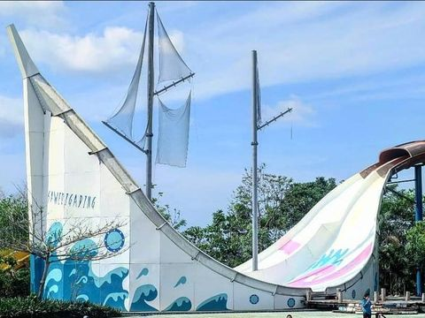

Wahana dan Fasilitas
Bugis Waterpark Adventure
1. Phinisi Slide
Phinisi Slide menjadi salah satu wahana utama yang ada di tempat ini. Sebuah seluncuran dengan tinggi kurang lebih 20 meter dan berujung pada sebuah papan berbentuk mirip kapal phinisi. Di samping sisinya, tertera tulisan 'Sawerigading' yang merupakan salah satu tokoh utama dalam sejarah nenek moyang suku Bugis. Jalur lintasan seluncuran ini, terdiri dari dua jalur di mana pengunjung bisa menikmati seluncuran yang panjang dan berkelok. Dan begitu sampai di bagian bawah anda akan merasakan sensasi seru berayun-ayun dari sisi kiri dan kanan kapal phinisi.
Kolam Ana'-ana' (Kids Pool)
.jpeg)
Tempat wahana satu ini terletak ketika pengunjung memasuki area Bugis Waterpark Adventure. Di tempat ini terdiri dari kolam renang kecil dengan berbagai objek wahana permainan untuk anak-anak. Di bagian tengahnya ada ember tumpah raksasa yang siap menuangkan air bah yang seru. Sementara di sekeliling ember tersebut terdapat seluncuran dan perosotan khusus anak-anak yang bisa dicoba.
Tappasorong (Multi Slide)
Wahana tappasorong adalah wahana yang berupa seluncuran. Namun seluncuran ini terdiri dari 4 jalur lintasan. Sehingga wahana ini sangat cocok digunakan untuk berseluncur bersama teman dan kerabat secara bersamaan.
Mapettang (Black Hole)
Masih berupa seluncuran, namun seperti namanya, wahana satu ini menawarkan sensasi berseluncur di dalam seluncuran yang gelap gulita. Jalur lintasan yang cukup panjang dan berkelok memberikan sensasi tersendiri ketika mencoba wahana satu ini.
Wae Massolo (Lazy River)
.jpeg)
Puas mencoba berbagai wahana yang seru dan memacu adrenalin, kamu bisa bersantai di spot Wae Massolo. Ini adalah semacam sungai buatan yang jalurnya mengelilingi area Bugis Waterpark Adventure. Sembari bersantai di atas ban pelampung, pengunjung bisa menikmati suasana waterpark yang sejuk di sepanjang aliran sungai.
Fasilitas yang Ada di Bugis Waterpark Adventure
1. Gazebo
2. Kursi santai
3. Ban pelampung
4. Toilet dan ruang ganti
5. Musholla
6. Loker dan penyewaan handuk
7. Warung makan dan food court
.jpeg)